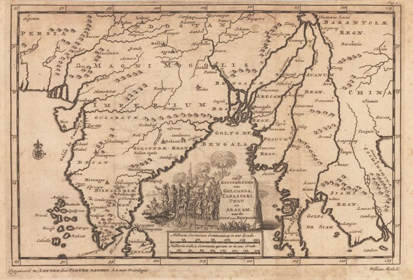
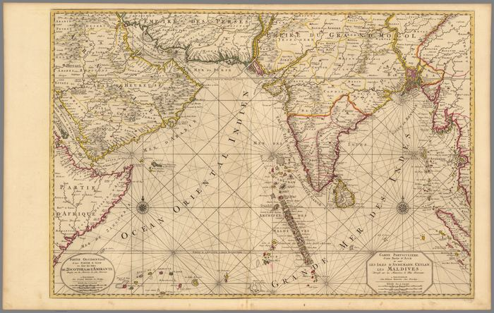
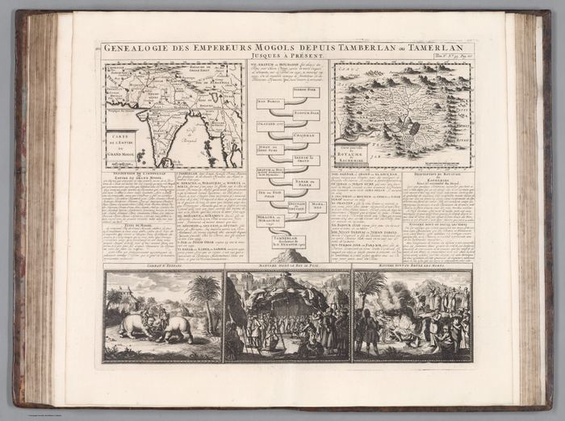
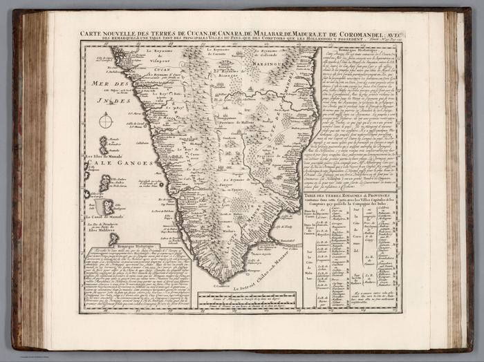
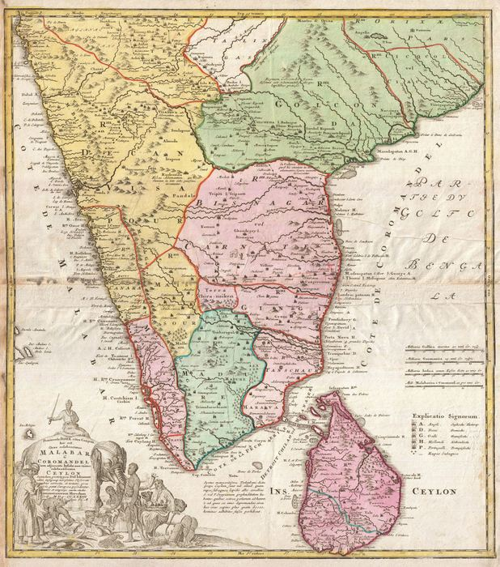
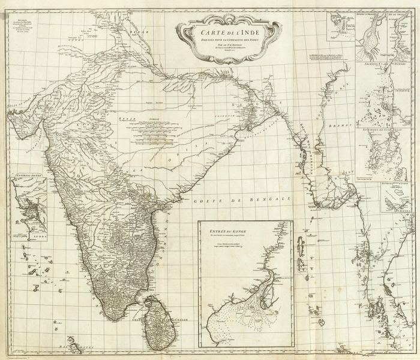
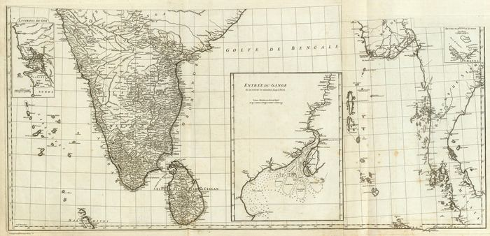
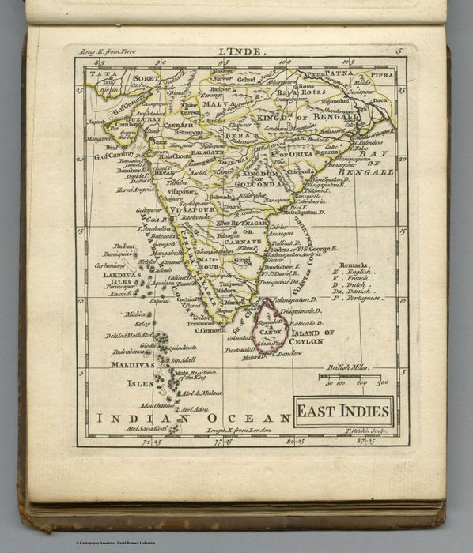
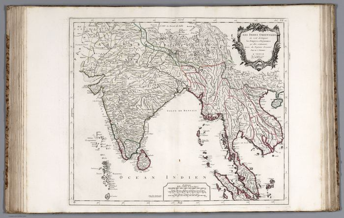

Room 02
The Great Mogul and the Companies
By the mid-seventeenth century, India is no longer chiefly a coastline at the edge of classical geography. European mapmakers increasingly organise the subcontinent around the Mughal court, the trading companies and the sea routes that connect them. French geographers impose a restrained political order; Dutch, German and Italian publishers turn that order into an atlas commodity. The gaze remains external, but it has become dynastic, commercial and confident: India as an empire to describe, a market to enter and a route to control.
 India below and beyond the Ganges, or the Empire of the Great MogulSanson, Nicolas, 1600-1667; Sanson, Guillaume (1633-1703) · 16541654
India below and beyond the Ganges, or the Empire of the Great MogulSanson, Nicolas, 1600-1667; Sanson, Guillaume (1633-1703) · 16541654  Empire du MogolDu Val, Pierre, 1619-1683 · 16821682
Empire du MogolDu Val, Pierre, 1619-1683 · 16821682  Old Persia and Old IndiaSanson, Nicolas, 1600-1667; Sanson, Guillaume (1633-1703) · 17021702
Old Persia and Old IndiaSanson, Nicolas, 1600-1667; Sanson, Guillaume (1633-1703) · 17021702  India and Southeast AsiaSanson, Nicolas, 1600-1667; Sanson, Guillaume (1633-1703) · 17031703
India and Southeast AsiaSanson, Nicolas, 1600-1667; Sanson, Guillaume (1633-1703) · 17031703 
The Kingdoms of Golconda, Tenasserim, Pegu and ArakanPieter van der Aa, after William Methold · Leiden, 17061706
The Bay of Bengal, Ceylon, the Maldives and the Andaman IslandsPierre Mortier · 1700, issued 17081708
Genealogy of the Mughal EmperorsHenri Chatelain; text associated with Nicolas Gueudeville · 17191719
Carte nouvelle des terres de Cucan, de Canara, de Malabar, de MaduraHenri Chatelain; text associated with Nicolas Gueudeville · 17191719
Malabar, Coromandel and CeylonHomann Heirs, after Johann Baptist Homann · 17331733
Carte de l’IndeJean-Baptiste Bourguignon d’Anville · 17521752
Carte de l’Inde – southern sheetsJean-Baptiste Bourguignon d’Anville · 17521752
East IndiesAndrew Dury · 17631763
Les Indes OrientalesPaolo Santini, after Robert de Vaugondy · 17791779